k-Day 096｜放棄之後
拿出太陽能板幫行動電源充電。
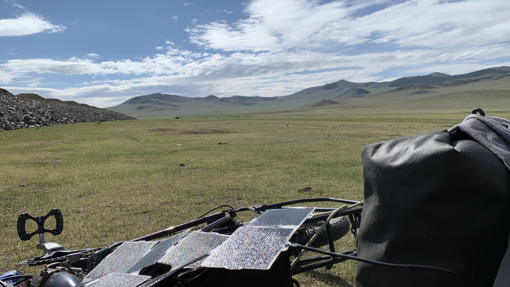
只因為不想再吹風就捨棄石人繞道南下的我究竟喪失了什麼，此時大概也很難立即得到答案。
不如就煮個熱咖啡，坐在帳篷內看著草原吧。幾天後世界就會變成一片黃土，此生都會記得這景色是確定的。
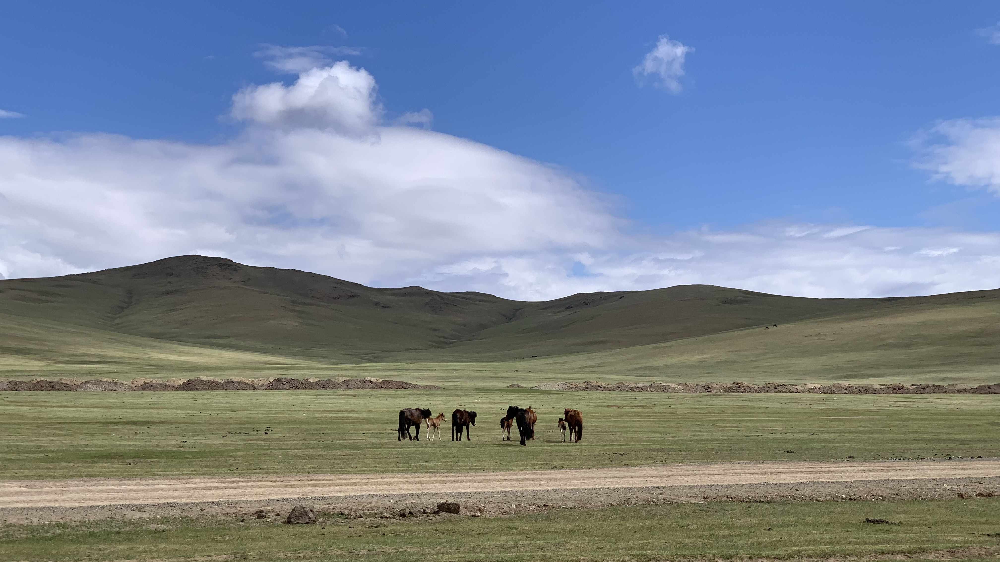
收拾裝備，將垃圾都塞進密封袋，今天仍然是騎在未完工的公路上。跟昨天一樣，只有我和馬，馬兒們看見我，就立刻要自己的孩子跟在他們旁邊，確認了幾秒，知道我沒有要追上去後，就用巨大的身體擋在我和小馬之間，往反方向離開。
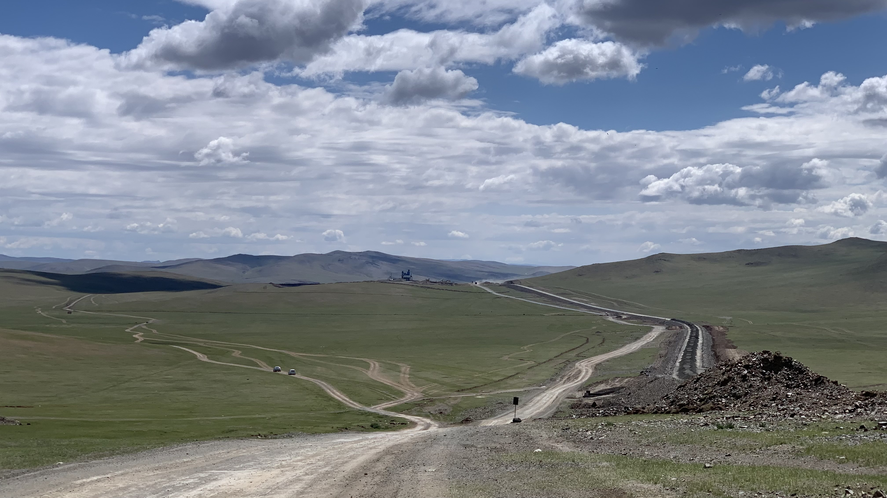
土路像搓衣板一樣相當難騎，此處也沒什麼私人車輛，來往的幾乎都是為了鋪設公路，載滿沙石來回跑的卡車。
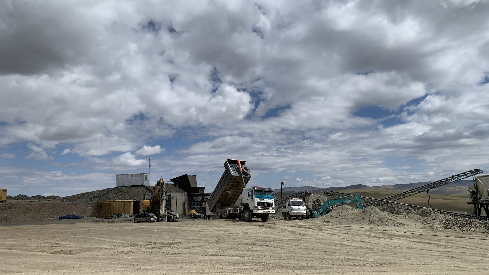
蒙古正在大力開發吧。為了從遊牧轉型觀光，這種鋪設好的道路對接待更多遊客是必要的。
十年前或者更早以前來過蒙古的人，究竟都經歷了什麼呢？被風吹得絕望的時候，是不是甚至連一間販賣零食飲料的商店都找不到？當時的牧民會更友善地給他們飲水，讓他們休息嗎？
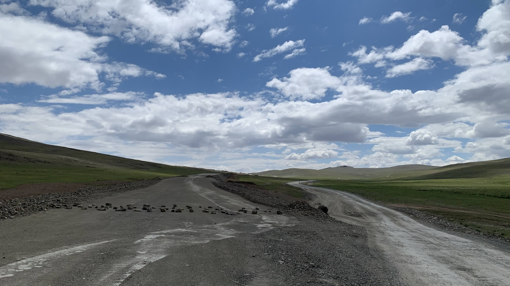
不久後路面出現一排小石頭，大概就是禁止通行的意思。
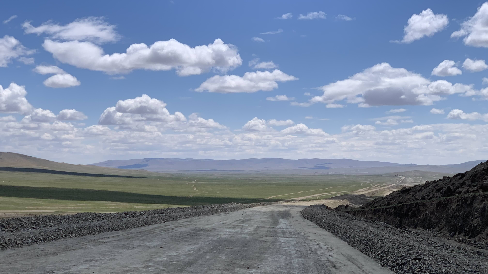
一開始頗新鮮的感覺，久了之後手臂震麻、頭也暈了。開始盯著地圖上與柏油路的距離。
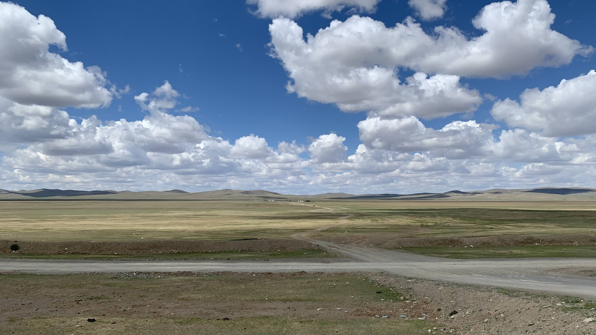
嘗試著自己找一條軌跡騎進山坡，應該可以切到對面的主幹道。途中被兩隻狗追，跳下車彎腰撿起石頭，他們看到我舉起手立刻就縮回自己的圍欄裡。這招有用。過了兩個山坡看到遠方出現一條平整的線，上面有車輛正在移動。
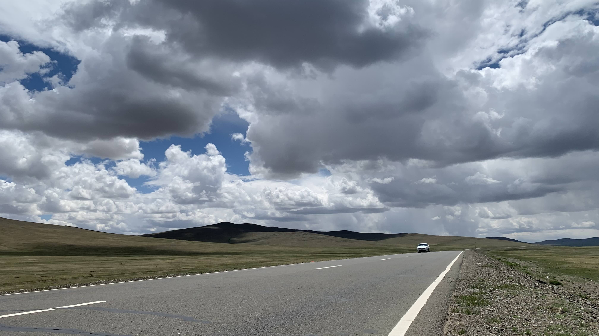
柏油路真美。柏油路這種頂級工藝真不簡單，人類是沒有辦法拒絕這種平順的質感的，感動地蹲在路肩拍下紀念照。
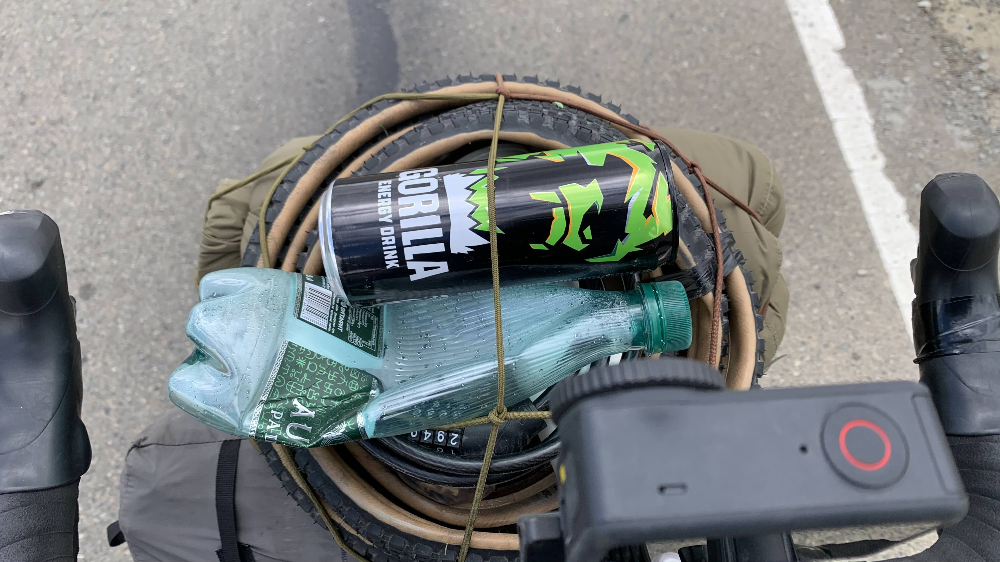
路上被一輛車攔下，塞了一罐大猩猩能量飲料。說到飲料，我的密封袋垃圾包呢？
一直塞在輪胎中間的垃圾包消失了，回想今天的行程，除了早上在營地旁吃的早餐，一直都沒有動過的。
我把整袋垃圾留在天堂般的草原。
既不是觀光景點，甚至連路都還沒開通，只有我和馬兒和牧民的草原。被我丟了一大包垃圾。
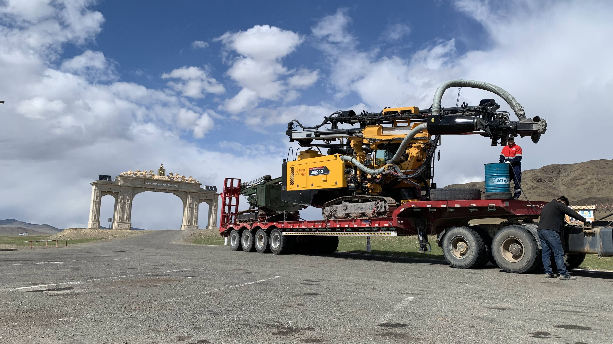
已經無法回頭了，繼續沿著鋪設良好的柏油路往下一個城市前進。城鎮外圍的休息站停了一輛卡車，司機看到我從坡頂滑進來的時候發出齁齁齁的笑聲。看了垃圾桶和涼亭旁滿地的碎玻璃，我已沒有任何資格批評這些人。默默地把二十三號靠在電線竿上，坐在旁邊喝起汽水。
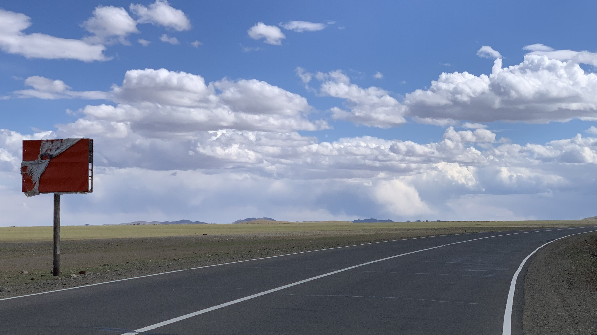
蒙古的廣告看板上幾乎都沒有廣告，也許是因為也沒啥東西想催促大家購買。這一點實在值得珍惜。
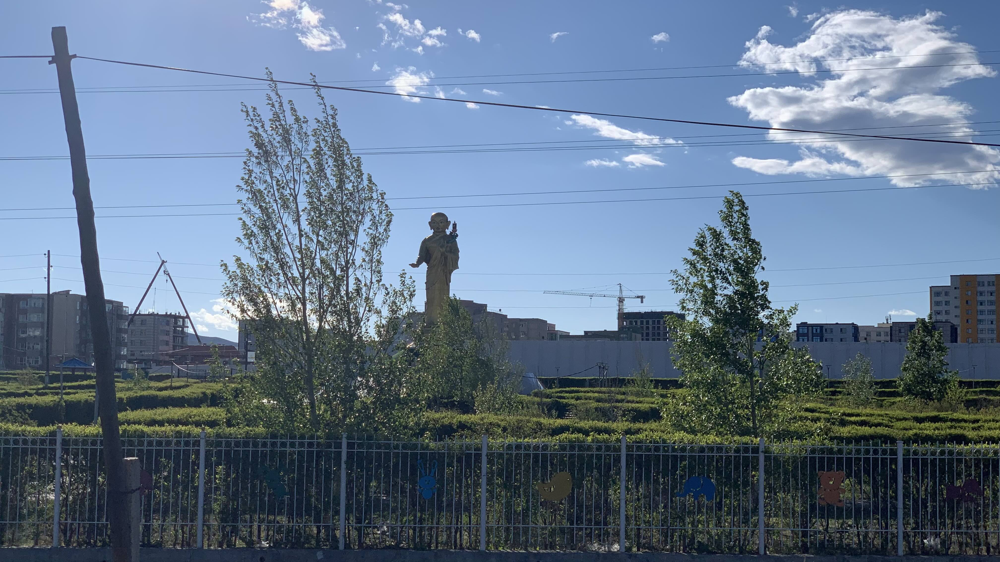
進城後發現一個有奇怪佛像的公園，想想睡在裡面還是不太安心，決定繼續往前走，在城外找一塊凹地露營吧。
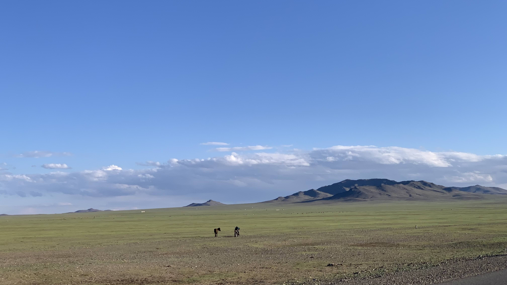
離開城鎮不久，看到有位騎著摩托的牧民不斷追著一匹馬跑。一人一馬前前後後騎了半小時，是在馴馬嗎？直到我累了，停下來休息。他倆也在不遠處停下來，一人一馬望向遠方的山頭。
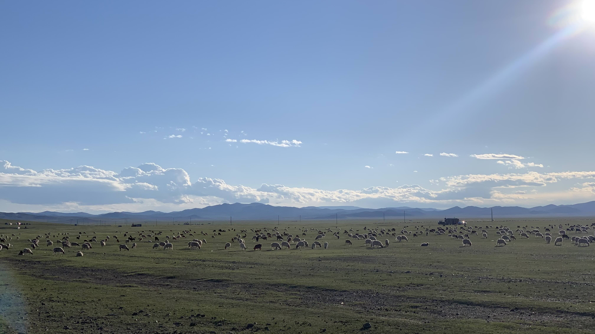
要培養一批馬真是不容易，回頭看公路的另一邊，一大群羊悠閒地吃草。完全不需要培訓，生下來就是一頭羊。
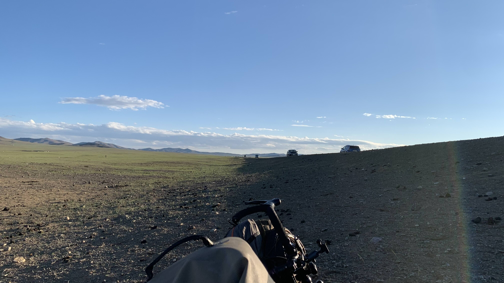
就睡在路邊吧。懶得再找隱蔽處了。
吃草的羊的方向飄來高級草本喉糖涼涼的甜味，離開烏蘭巴托後不時會聞到這樣的青草味。草原的人離開草後，會不會偶爾懷念這樣的味道呢？
今日花費： 羊肉麵 18000元